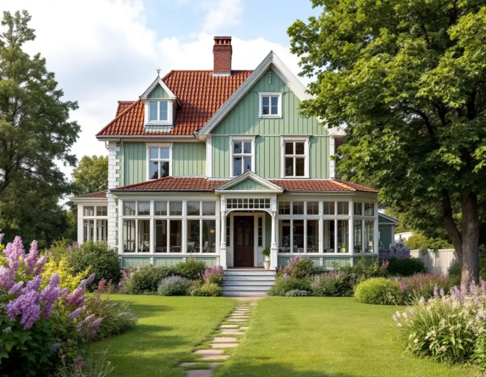
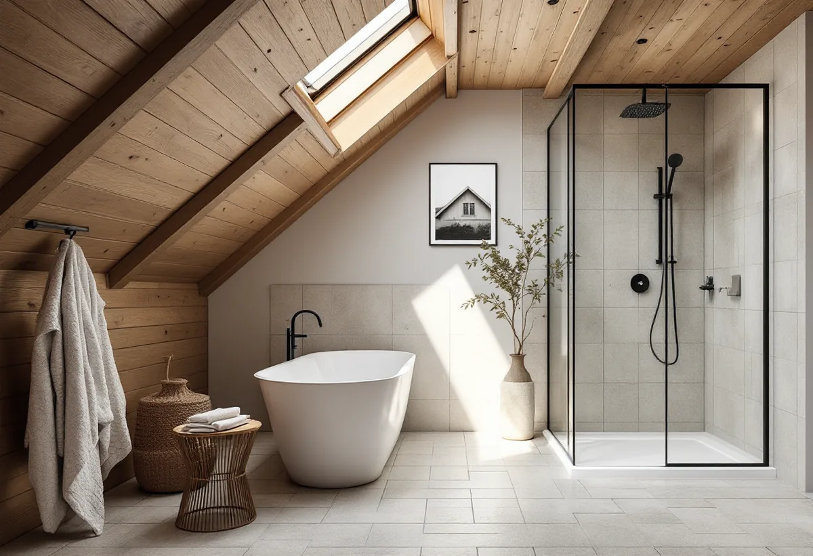
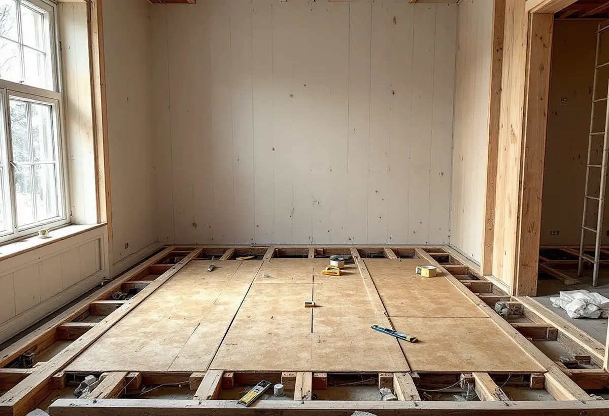

Platsbesök
Vi ser badrummet, bjälklaget och var stammar och värme går.
Ett badrum på övervåningen i en äldre trävilla ligger på ett träbjälklag, och ska det få klinker måste golvet först klara det. Geal Entreprenad AB renoverar badrum i villor i Älvsjö, Långbro, Långsjö och Liseberg och börjar med det som bär.

Stadens strategi för småhus- och villaområden berättar att stationssamhällena längs järnvägen på 1910-talet växte till större samhällen och att några, som Älvsjö, fick status som municipalsamhällen. Stadsplanen för Älvsjö villastad togs fram av Per Olof Hallman, och trä var det dominerande fasadmaterialet i villastäderna.
Enligt stadens områdesfakta för 2025 finns 1 377 småhus med äganderätt i Långbro, 839 i Långsjö, 264 i Solberga, 255 i Liseberg och 191 i stadsdelen Älvsjö. I strategins tabell är del av Älvsjö markerad som kulturhistoriskt värdefull miljö med generösa byggrätter.

GVK:s branschregler kräver att ett golv som ska få kakel, klinker eller natursten förstärks för att bli tillräckligt stabilt. Det kan göras med en formstabil skiva som limmas och skruvas fast, till exempel 22 millimeter spånskiva kompletterad med minst 12 millimeter formstabil avjämningsmassa eller en 13 millimeter skiva, eller med lättfyllnadsmassa mellan bjälkarna och armerad avjämningsmassa.
GVK:s anvisning utgår från ett bjälklag med högst 600 millimeter mellan bjälkarna, och med bjälkar 45 x 220 millimeter i virkeskvalitet C24 får avståndet mellan stöden vara högst 3,4 meter vid 600 millimeters centrumavstånd. Vi öppnar golvet och mäter bjälkarna innan vi bestämmer metod.
Påverkar flytten av badrummet bärande konstruktion krävs anmälan och startbesked, skriver Stockholms stad. Du kan titta på ritningar för att se husets principiella konstruktion, men staden påpekar att ritningar kan vara ofullständiga och att det inte är säkert att de som byggde följde dem. Staden kan inte bedöma åt dig om det du vill göra påverkar bärande konstruktion.
I ett äldre trähus anlitar vi därför en konstruktör när bjälklaget ska bära ett nytt badrum eller en vägg ska öppnas. Ändras ventilationen väsentligt eller tillkommer en ny stam i ett nytt schakt krävs också anmälan.
I ett hus med radiatorer kan badrummet få en lokal vattenburen golvvärmeslinga, ofta med en shunt som blandar ner radiatorvattnet. GVK skriver att rör på 12, 10 och 8 millimeter mest används vid renovering där bygghöjden ska vara låg, att inkopplingen mot värmesystemet bör göras av en VVS-montör och att elarbetet, som inkoppling av cirkulationspump och rumsreglering, ska göras av en elektriker.
Det finns inget krav på tröskel i ett våtrum, men saknas tröskel ska fuktkänsligt material vid dörren skyddas och golvbrunnens fläns ligga minst 20 millimeter under tätskiktets översta punkt vid dörröppningen. Om villans kök kan du läsa under köksrenovering i Älvsjö, och om tjänsten i stort under badrumsrenovering.

Vi ser badrummet, bjälklaget och var stammar och värme går.
Bjälkarna mäts och en konstruktör kopplas in när något ska bära mer.
Förstärkning, VVS, golvvärme, tätskikt och ytskikt står var för sig.
Anmälan och kontrollplan när bärande delar eller stammar ändras.
Golvet förstärks, installationer dras och tätskikt och ytskikt läggs.
Vi går igenom badrummet och lämnar dokumentationen.
För en villa räknar Skatteverket installation och reparation av dusch, toalett, handfat, element och kakel- och klinkersättning som rotarbete, liksom att dra och reparera vatten- och avloppsledningar. Är bostaden yngre än fem år får arbetet bara återställa det ursprungliga skicket.
Avdraget är högst 30 procent av arbetskostnaden och högst 50 000 kronor per person och år. Material och resor ger inget avdrag.
Bjälklagets skick och om det behöver förstärkas, om badrummet flyttas, golvvärme, avstånd till stammar och vilka ytskikt du väljer. Efter ett gratis platsbesök får du ett skriftligt kostnadsförslag.
Tätskikt, golvbrunn, el, VVS och intyg.
Badrumsrenovering i Stockholm →Takbyte, takbesiktning och plåtarbeten.
Takläggare i Älvsjö →Långbro, Herrängen och Långsjö.
Takrenovering i Älvsjö →Villatomten, prickmarken och vattnet.
Attefallshus i Älvsjö →Byggrätt, gamla planer och planändring.
Byggföretag i Älvsjö →Villastad, nya grannhus och puts på trä.
Fasadrenovering i Älvsjö →Småspröjs och fönsterluckor.
Fönsterrenovering i Älvsjö →Golvvärme under trägolv i äldre villor.
Golvläggare i Älvsjö →Slipa och ge golvet en ny kulör.
Golvslipning i Älvsjö →Villastad, flerlägenhetsvillor och kök i lager.
Köksrenovering i Älvsjö →Villastad, egnahem och småstugor i Älvsjö.
Målare i Älvsjö →Plåttak för solceller, kupor och verandor i Älvsjö.
Plåtslagare i Älvsjö →Staket, grind och plank i villastaden.
Snickare i Älvsjö →Vinden, kupan och byggrätten.
Takbyte i Älvsjö →Bårder och dekor i villastaden.
Tapetsering i Älvsjö →Byggrätt, trädgårdssida och volym.
Tillbyggnad i Älvsjö →